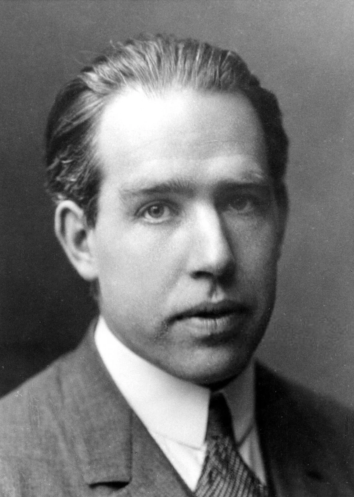
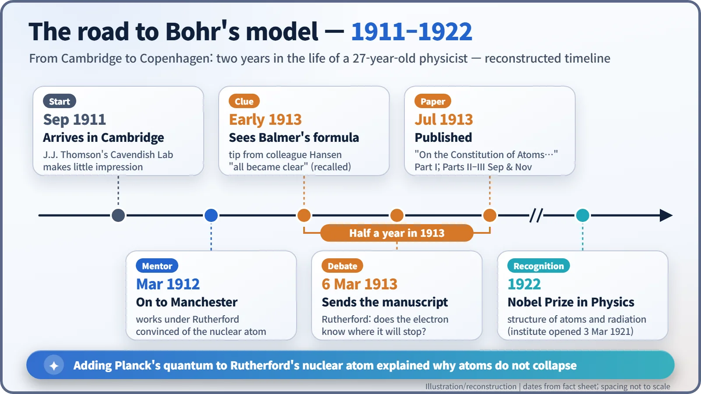
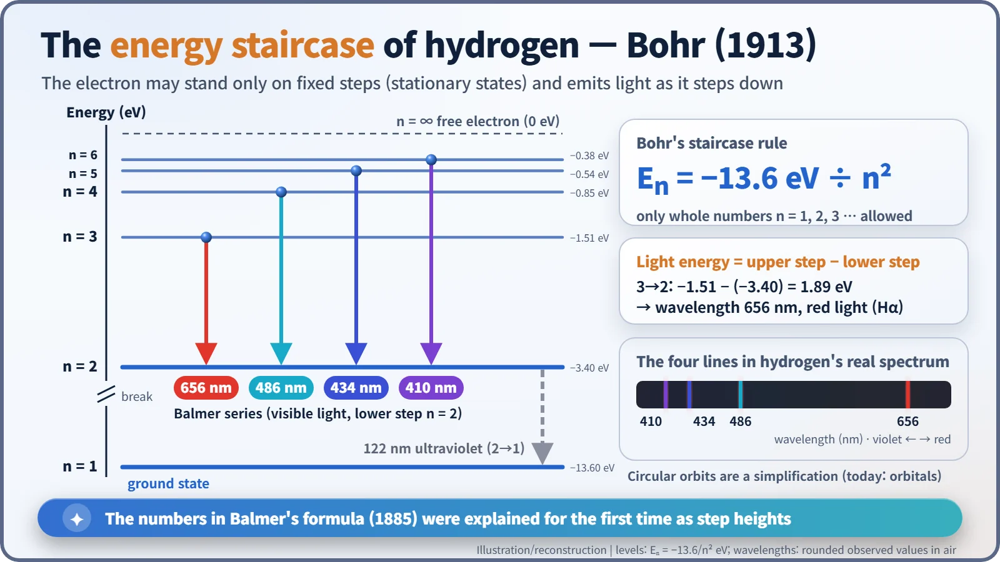

Nuclear History · 027
Does the Electron Know Where It Will Stop? — Bohr's Atomic Model (1913)
Electrons that may stand only on fixed energy steps explained the lines of hydrogen, and drew a sharp question from Rutherford.
In 1913 a 27-year-old Danish physicist, Niels Bohr, rescued Rutherford's nuclear atom from a fatal flaw by bringing Planck's quantum inside it. His electrons could stand only on fixed energy "steps" and gave off light only when they jumped between them, which explained the mysterious lines of the hydrogen spectrum. Rutherford's first reaction was a sharp question: how does the electron know where it will stop?
A letter with a hard question
"There appears to me one grave difficulty in your hypothesis, which I have no doubt you fully realize, namely, how does an electron decide what frequency it is going to vibrate at when it passes from one stationary state to the other? It seems to me that you would have to assume that the electron knows beforehand where it is going to stop." [2]
Ernest Rutherford (1871–1937) wrote those lines in Manchester in March 1913, in reply to a manuscript from a young Danish physicist in Copenhagen: Niels Bohr (1885–1962), then 27. Was the great man unimpressed? Not at all. In the same letter he called Bohr's ideas "very ingenious". What Rutherford had spotted, with a master's eye, was that this new theory broke one of physics' oldest habits of thought.

An atom that ought to collapse
Two years earlier, Rutherford had proposed that an atom has a tiny, heavy nucleus at its centre with electrons circling around it. The trouble was that, by the rules of physics at the time, such an atom could not exist. An electric charge moving in a circle radiates light and loses energy. The electron should therefore spiral inwards and crash into the nucleus. Bohr spelled out this very problem at the start of his 1913 paper: on paper, the atom should collapse almost at once. Yet real atoms are perfectly stable. [1]
The second puzzle was light. Pass an electric discharge through hydrogen gas and split the glow with a prism, and you do not get a smooth rainbow, only a handful of sharp lines. In 1885 the Swiss schoolteacher Johann Balmer found a formula that predicted the wavelengths of these lines precisely, but for almost 30 years nobody could say why the numbers came out that way.
A young Dane in Manchester
After finishing his doctorate in 1911, Bohr crossed to England in September to work with J.J. Thomson at the Cavendish Laboratory in Cambridge. He failed to make much of an impression there, and in March 1912 he moved to Manchester to work under Rutherford. There he became convinced that the nuclear atom was right. In July he returned to Denmark to marry, but the stability problem stayed with him. [2]
The key came from an unexpected direction. Early in 1913 a spectroscopist colleague, Hans Marius Hansen, asked him whether he knew Balmer's formula. Bohr later recalled that once he saw it, everything became clear. On 6 March he sent his first manuscript to Rutherford. The paper, dated 5 April 1913 and titled "On the Constitution of Atoms and Molecules", appeared in the July 1913 issue of the Philosophical Magazine (volume 26). Parts II and III followed in September and November, making a trilogy. [1] [3]

A lift that never stops between floors
Bohr's answer was bold. His paper rests on two assumptions. First, an electron can only occupy certain orbits, which he called "stationary states", and while it stays in one of them it does not radiate. Second, light is emitted only when the electron passes from one stationary state to another, and the frequency of that light is fixed by the energy difference through Planck's relation, E = hν. [1]
Think of the atom as a lift that can never stop between floors. When it drops from the third floor to the second, exactly the energy of that height difference leaves as a single packet of light, a photon. For hydrogen, the floor heights follow a simple rule: Eₙ = −13.6 eV ÷ n². Dropping from n = 3 (−1.51 eV) to n = 2 (−3.40 eV) releases 1.89 eV, which is red light with a wavelength of 656 nm. Drops from n = 4, 5 and 6 to n = 2 give 486, 434 and 410 nm. Those are precisely the four lines that Balmer's formula had matched without explaining.

| Jump | Energy released | Wavelength | Colour |
|---|---|---|---|
| n = 3 → 2 | 1.89 eV | 656 nm | red |
| n = 4 → 2 | 2.55 eV | 486 nm | blue-green |
| n = 5 → 2 | 2.86 eV | 434 nm | blue-violet |
| n = 6 → 2 | 3.02 eV | 410 nm | violet |
Bohr wrote that "the agreement in question is quantitative as well as qualitative": his theoretical value agreed with the measured one within the experimental uncertainty of the constants involved. He also took on a controversy directly. A mysterious series of lines seen in starlight, the Pickering series, had been blamed on hydrogen; Bohr argued it came instead from helium that had lost one electron. [1]
From doubt to consensus
Rutherford's question, "how does the electron know where to stop?", was one Bohr's model could never truly answer. Even so, the theory rescued Rutherford's nuclear atom. At the end of 1913 the Manchester chemist Kasimir Fajans wrote to Rutherford: "I have followed Bohr's papers with extraordinary interest, and now I no longer doubt the complete correctness of your atomic theory." [2]
On 3 March 1921 Bohr opened the Institute for Theoretical Physics in Copenhagen (today's Niels Bohr Institute). In 1922 he received the Nobel Prize in Physics "for his services in the investigation of the structure of atoms and of the radiation emanating from them". [4]
The model had clear limits. It already failed for helium, the simplest atom with two electrons, and it could not explain why some lines are brighter than others or how lines split in a magnetic field. Quantum mechanics, which arrived in 1925–1926, took its place, and today electrons are described not as little planets on circular tracks but as probability clouds called orbitals. Yet Bohr's model was not simply thrown away as "wrong": the hydrogen energy levels it gives are the same values we calculate today. It was a first approximation, and the moment the idea that energy comes in steps first entered the atom.